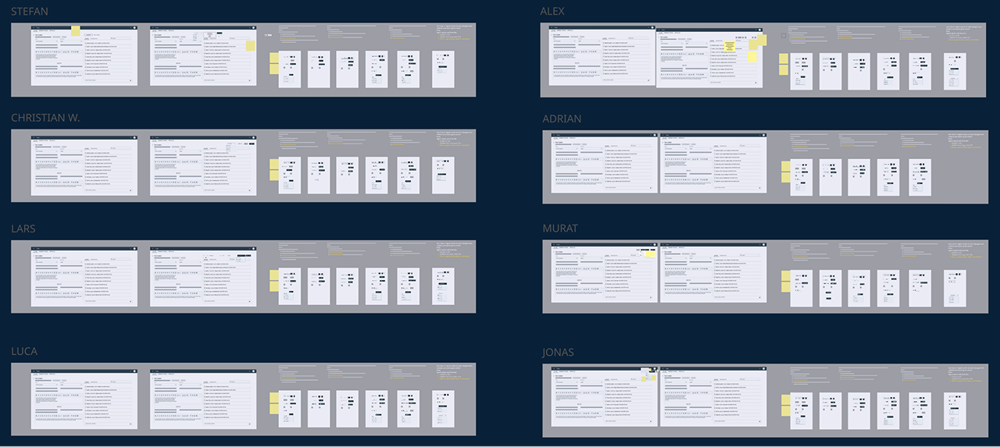
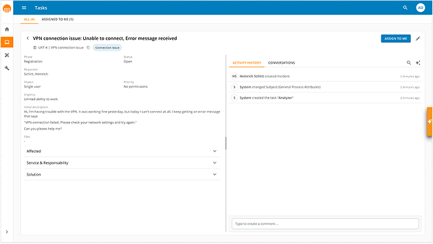
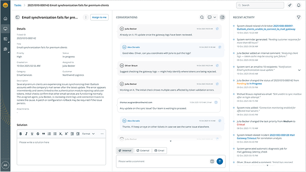
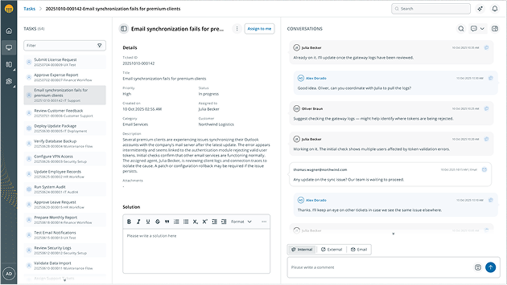
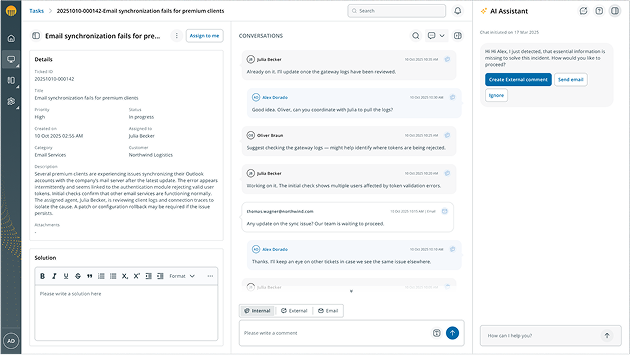

Contexto
El reto
AI Process Engine es la plataforma de Serviceware de IT Service Management orientada a integrar inteligencia artificial en la gestión de servicios empresariales, con el objetivo de automatizar procesos, reducir tareas manuales y mejorar la eficiencia operativa de los equipos de soporte. Dentro de la plataforma, los agentes son los principales responsables de gestionar las peticiones de los clientes a través de un sistema de tickets, y su trabajo se concentra en una única interfaz: el Agent Workspace.
La versión existente del Workspace presentaba un problema estructural, ya que la pantalla mostraba demasiadas acciones simultáneas sin una jerarquía clara, lo que dificultaba que el agente identificara rápidamente qué información era relevante en cada momento. Funcionalidades clave como la conversación con el usuario o el acceso al histórico del ticket competían en visibilidad con elementos de menor relevancia, generando una carga cognitiva elevada en un entorno donde el volumen de trabajo es alto y la presión temporal es constante.
El reto no era únicamente visual, sino estructural, debido a que la interfaz no estaba alineada con las tareas reales que los agentes debían realizar, lo que planteaba una pregunta concreta: ¿cómo reorganizar una pantalla compleja para que el agente pudiera centrarse en lo que realmente importa?
Mi rol
Como Product Designer del proyecto AI Process Engine, lideré el rediseño del Agent Workspace en colaboración con otros UX Designers, Product Owners, Product Leads y el equipo de desarrollo. Mi responsabilidad cubrió el proceso de research, la definición de la estrategia de diseño, la reorganización de la jerarquía de la interfaz y el diseño de las mejoras funcionales orientadas a optimizar el flujo de trabajo de los agentes.
Proceso
Research continuo como base de las decisiones
Antes de proponer ningún cambio estructural, era necesario entender cómo trabajaban realmente los agentes. Llevé a cabo un proceso de investigación continuo basado en entrevistas con agentes, consultores y stakeholders, combinado con tests mensuales con más de diez participantes durante todo el proyecto. Durante estas sesiones analizamos los flujos reales de trabajo, las tareas más frecuentes, los puntos de fricción y las estrategias que los usuarios utilizaban para encontrar información.
Los insights obtenidos fueron concretos: la conversación con el cliente era la herramienta central del trabajo del agente y debía ocupar un lugar prioritario en la interfaz; los agentes necesitaban acceder rápidamente a información específica dentro del sistema; y la flexibilidad para adaptar la pantalla a distintos flujos de trabajo era una necesidad real, no opcional.

Jerarquizar la interfaz: la conversación como centro
A partir de los insights del research, la primera decisión fue reorganizar completamente la jerarquía de la interfaz. El panel de conversación con el cliente, que hasta entonces competía en visibilidad con elementos de menor relevancia, pasó a ser el elemento central y prioritario de la pantalla, permitiendo al agente seguir el contexto de la incidencia de forma clara y continua.
Junto con este cambio estructural, incorporé mejoras funcionales orientadas a facilitar el acceso a la información: búsqueda dentro del historial de mensajes y filtros para localizar rápidamente contenido relevante dentro de la conversación.


Flexibilidad para distintos flujos de trabajo
El research evidenció que los agentes no trabajaban todos de la misma forma, por lo que la interfaz necesitaba adaptarse a distintos estilos de trabajo sin añadir complejidad. Diseñé la posibilidad de mostrar u ocultar paneles según las necesidades del agente en cada momento, permitiendo que cada usuario configurara su espacio de trabajo de forma flexible sin necesidad de abandonar la pantalla principal.
Esta decisión también incluyó la aplicación del nuevo Design System (Code Blue 3.0): nuevos componentes, arquitectura de tokens y estándares de accesibilidad WCAG, convirtiendo el Agent Workspace en uno de los primeros productos en adoptar la nueva versión del sistema en un contexto de alta densidad informativa.


Impacto
El rediseño del Agent Workspace transformó una interfaz compleja y poco jerarquizada en una herramienta centrada en las tareas reales del agente. Con la conversación como elemento principal de la pantalla, los agentes pueden seguir el contexto de cada incidencia de forma clara y continua, sin tener que moverse entre distintos sitios para encontrar la información que necesitan.
El proceso de validación continua, con tests mensuales durante todo el proyecto, permitió iterar las decisiones de diseño de forma fundamentada y detectar a tiempo aspectos que no funcionaban como se esperaba. El feedback de los agentes, consultores y stakeholders que participaron en las sesiones fue positivo en todas las iteraciones, valorando especialmente la claridad de la nueva jerarquía y la flexibilidad para adaptar la interfaz a distintos flujos de trabajo.
Aprendizajes
El rediseño del Agent Workspace me dejó dos aprendizajes que aplico ahora a cualquier proyecto de rediseño en entornos operativos complejos.
Lo que los usuarios piden no siempre es lo que necesitan. Durante el research, muchos agentes expresaban preferencias concretas sobre funcionalidades específicas. Sin embargo, cuando analizábamos esas preferencias dentro de flujos de trabajo reales en los tests, las prioridades cambiaban. Esto reforzó la importancia de validar continuamente las decisiones de diseño con prototipos y tests en contexto, en lugar de tomar decisiones únicamente a partir de lo que los usuarios declaran en entrevistas.
En entornos de alta densidad informativa, simplificar es una decisión estructural, no visual. La versión anterior del Workspace no tenía un problema estético, sino más bien un problema de jerarquía. Reducir la carga cognitiva del agente no pasaba por eliminar elementos visuales, sino por reorganizar qué información ocupaba el primer plano y cuál quedaba en un segundo nivel.